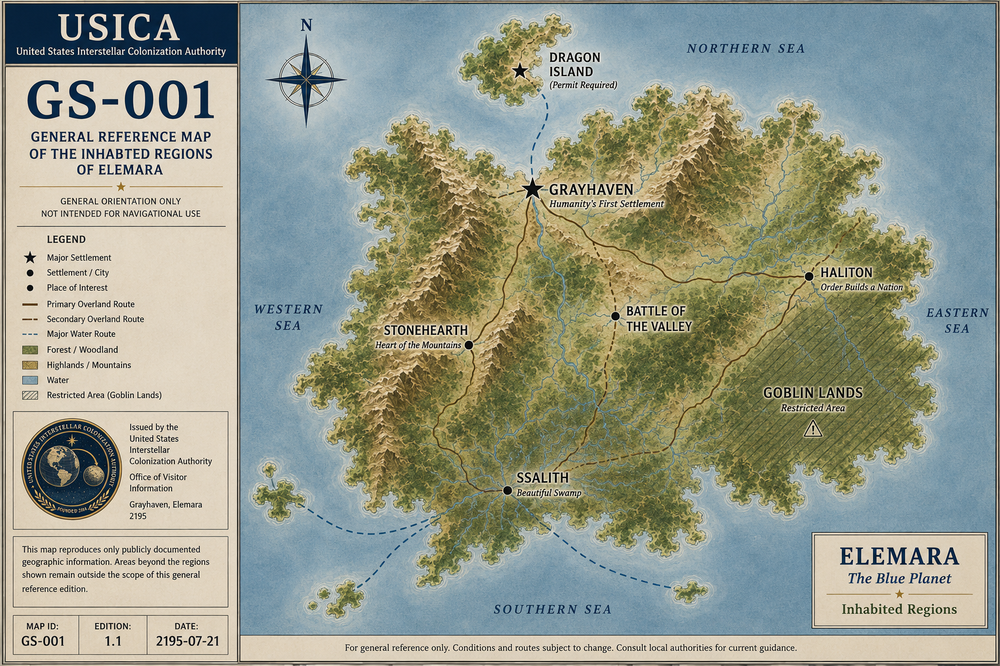

General Reference Map

Locations Shown
- Dragon Island
- Grayhaven
- Stonehearth
- Battle of the Valley
- Ssalith
- Haliton
- Goblin Lands
Map Notice
This map reproduces only publicly documented geographic information. Areas beyond the regions shown remain outside the scope of this general reference edition.
The map is intended for orientation and should not be used for navigation, transportation planning, or travel beyond established routes.